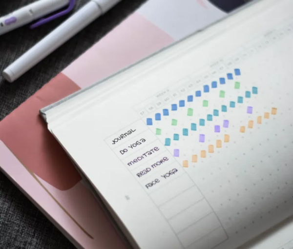

Weniger drucken, sinnvoller drucken-effizienter Arbeiten
Weniger drucken, sinnvoller drucken-effizienter Arbeiten
Wir leben in einer digitalen Arbeitswelt, die noch vor wenigen Jahrzehnten wie ein Szenario aus einem Science Fiction Film erschienen wäre. Elektronische Briefe erreichen auf Knopfdruck ihre Ziele rund um die Welt. Computer mit enormen Rechenleistungen passen in jeden Aktenkoffer. Grafiken und Präsentationen lassen sich mit einem Fingerwischen gestalten und in jedem Moment können wir auf eine Flut globalisierter Information zugreifen.
Und dennoch macht es den Eindruck, als würden uns die Möglichkeiten des Fortschritts oftmals überfordern. Anstatt die Chancen eines digitalen Workflows optimal zu nutzen, ertrinken immer noch viele Unternehmen geradezu in einer Flut ausgedruckter E-Mails, Präsentationen, Websites und Dokumenten. Der Fingertipp auf die Druckertaste ist wie ein Reflex im täglichen Büroalltag. Viele Dateien werden mehrfach ausgedruckt, abgeheftet, gesammelt, gestapelt, verloren und wieder ausgedruckt. Das papierlose Büro, so scheint es, ist für viele immer noch Zukunftsmusik und maßloses Drucken die Realität.
Verlust an Zeit, Geld und Effizienz
Doch es lohnt sich für Unternehmen, ernsthaft über ihr Druckmanagement nachzudenken. Denn es geht um mehr als nur um den unschönen Anblick überquellender Schreibtische.
*Geldverschwendung
Rund 34 Milliarden Euro wurden 2010 in deutschen Unternehmen für das Drucken ausgegeben (Quelle s.u.*). Dabei drucken die Mitarbeiter sicher bei der Hälfte dieser Vorgänge allein aus Gewohnheit und Gedankenlosigkeit. Papier ist geduldig, aber Material, Hardware und Druckerbetrieb kosten Geld.
* Zeitverlust
In vielen Fällen ist das Ausdrucken ein überflüssiger Umweg im Workflow. Es schafft Chaos, wo man auf Überblick hoffte. Die Archivierung und Auswertung ausgedruckten Papiers erfolgt meist »analog«. Man verzichtet ohne Grund auf die Hilfe leistungsfähiger EDV und verliert wertvolle Arbeitszeit dabei, Herr der Papierflut zu werden.
* Verlust an Effizienz
All dies kann sich zu einem beachtlichen Hemmnis der innerbetrieblichen Effizienz summieren. Viel zu oft schafft das unaufhörliche und unabgestimmte Drucken mehr Probleme als Nutzen. Es wird zu einem Stressfaktor, der eine motivierte und fokussierte Arbeitshaltung erschwert.
Erster Ausweg aus der Papierflut: optimierte Druckerlösungen
Unter diesem Ansatz versteht man die Umsetzung einer sinnvollen Gesamtkonzeption aller Druckvorgänge. Das Ziel ist es, nicht mehr einfach »drauf los« zu drucken, sondern das Druckermanagement mittelfristig so zu optimieren. Damit sollen sinnlose Ausdrucke und Dokumentenchaos der Vergangenheit angehören. Arbeitsplätze, Mitarbeiter, Druckerhardware und Geschäftsprozesse werden als Bestandteile eines gemeinsamen Workflows analysiert. Optimierte Druckerlösungen sind deshalb immer eine Kooperation aus IT- und Organisationsberatung.
Moderne Druckertechnologie bietet heute weitaus mehr Möglichkeiten zum Dokumentenmanagement als nur den Print-Knopf. Eine Optimierung der entsprechenden Abläufe online und offline kann sicherstellen, dass die wichtigen Dokumente besser und zuverlässiger zum richtigen Zeitpunkt am richtigen Ort zur Verfügung stehen. Gleichzeitig werden überflüssige Papierverschwendung und nicht benötigte Dokumentenberge reduziert.
Die Vorteile einer optimierten Druckerlösung
* Besserer Fokus auf Kernaufgaben
Wer weniger Zeit auf überflüssige und ineffiziente Druckprozesse verwendet, hat mehr Zeit, sich um die Inhalte zu kümmern. Nicht das Drucken und Sortieren der Information bindet die Aufmerksamkeit, sondern nur noch Inhalt und Nutzen.
* Finanzielle Einsparungen und Nachhaltigkeit
Die Betriebskosten, die durch eine bessere Vernetzung und Verwaltung der Druckvorgänge eingespart werden können, werden oft unterschätzt. Hier liegen Einsparungspotenziale brach, die nach einer Umstellung langfristig genutzt werden können. Mit der deutlichen Reduzierung überflüssiger Papierausdrucke verbessert ein Unternehmen zudem seine Nachhaltigkeitsbilanz und schont wertvolle Ressourcen.
* Besseres Know-how Management
Die Organisation von Druckvorgängen hat viel zu tun mit dem internen Wissensfluss in einem Unternehmen. Anstatt sinnlos Sackgassen aus Papier zu schaffen, erleichtert ein optimiertes Druck- und Dokumentenmanagement den internen Informationsfluss und schafft schneller einen klaren Blick auf die wichtigen Dinge.
* Klarheit schafft Motivation
Viele Druckvorgänge in Unternehmen sind schlicht überflüssig und desorganisiert und schaffen eine unübersichtliche Materialflut, deren Bewältigung Ressourcen und Nerven kostet. Weniger Zeitverschwendung und eine Verbesserung des Workflows wirken sich deshalb spürbar positiv auf die Arbeitsmotivation aus.
Optimierte Druckerlösungen sind weit mehr als eine effizientere Nutzung moderner Technologien. Sie machen den Bürodrucker zum Verbündeten eines integrierten Workflows und zu einem wichtigen Arbeitsmittel in einer effizienten Projektsteuerung. Anstatt Berge von Papier abzuarbeiten, kann mit weniger Ausdrucken und den richtigen Dokumenten schneller und besser gearbeitet werden.
______________________
* Quelle: Centre for Economics and Business Research | via: http://www.computerwoche.de/a/milliarden-misere-beim-drucken,1938933
Weitere Artikel
Digitale Tools für Zusammenarbeit im Office
E-Mail, Digitale Ablage und eine Branchensoftware sind schon lange nicht mehr genug für effiziente Zusammenarbeit. Doch bevor Sie sich in einem Dschungel an digitalen Werkzeugen verlieren, sollten Sie sich über die Systematik …

Veränderung braucht Gewohnheit
Sowohl im Berufs-als auch im Privatleben sind wir ständig im Veränderungsmodus. Manche Veränderungen wollen wir umsetzen, manche müssen wir mitmachen. Wir alles wissen, dass Veränderung nie leicht sind und je länger wir etwas auf …